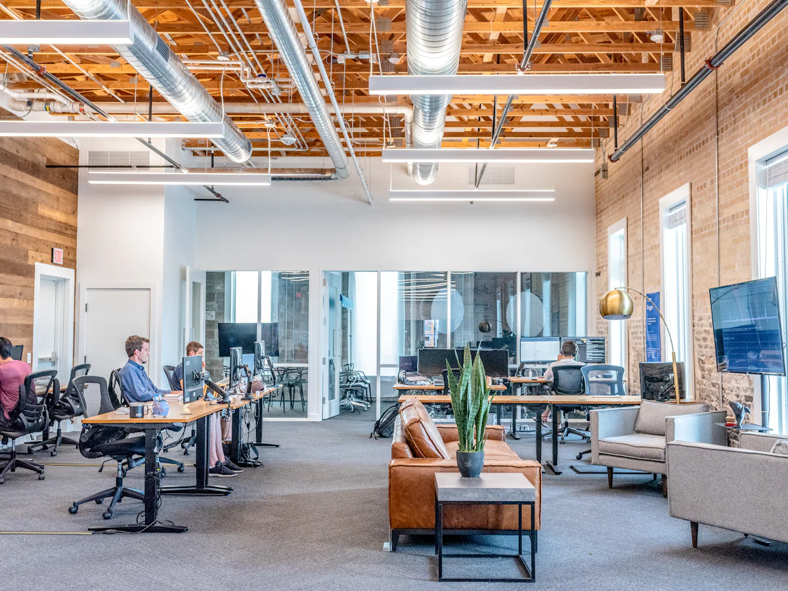
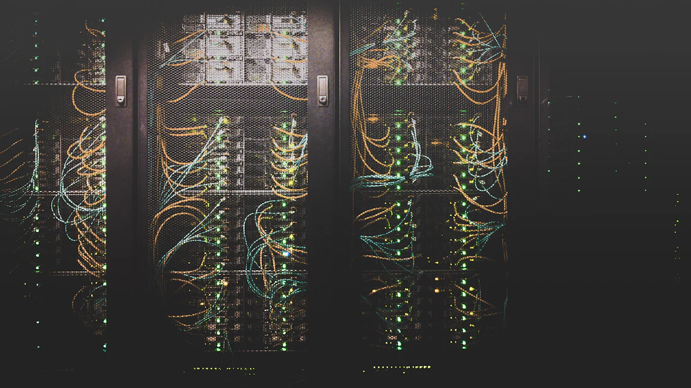

Helpdesk utilisateurs
Vos salariés nous contactent par téléphone, e-mail ou ticket. Nous prenons la main à distance et résolvons leurs problèmes au quotidien.
Concentrez-vous sur votre métier, nous nous occupons de votre informatique. Novazur IT devient votre service informatique externalisé : supervision, helpdesk pour vos équipes, sécurité et sauvegardes, pour un coût mensuel maîtrisé.

Nous accompagnons les entreprises de 1 à 50 postes : commerces, cabinets médicaux, avocats, agences immobilières, architectes, hôtels et restaurants, start-ups…
Vos salariés nous contactent par téléphone, e-mail ou ticket. Nous prenons la main à distance et résolvons leurs problèmes au quotidien.
Supervision des postes et serveurs, mises à jour de sécurité, inventaire du parc et alertes avant que la panne ne survienne.
Antivirus managé (EDR), pare-feu, authentification multifacteur, sensibilisation des équipes au phishing et aux rançongiciels.
Sauvegardes automatisées et externalisées (règle 3-2-1), tests de restauration réguliers et plan de reprise en cas d'incident.
Messagerie professionnelle sur votre nom de domaine, Teams, SharePoint, gestion des licences et migration sans interruption.
Wi-Fi professionnel et Wi-Fi invités, VPN pour le télétravail, imprimantes partagées et accès sécurisés.
Besoin de former vos collaborateurs à la cybersécurité, à Microsoft 365 ou à Excel ? Découvrez nos formations en entreprise.
Remplacez votre ancien standard par une téléphonie IP moderne, plus souple et souvent moins chère. Nous installons et programmons l'ensemble de votre système, du poste de l'accueil au smartphone de vos commerciaux.
Abonnements regroupés, appels entre vos sites inclus, plus de matériel propriétaire coûteux à maintenir.
Votre numéro professionnel vous suit au bureau, à la maison ou en rendez-vous, sur votre poste comme sur votre mobile.
Message d'accueil personnalisé, musique d'attente, répartition des appels : plus aucun client ne tombe dans le vide.

Le dépannage intervient après la panne. L'infogérance est un service continu : nous surveillons, mettons à jour et sécurisons votre informatique pour éviter les pannes, et nous intervenons en priorité quand un problème survient.
Oui, nos contrats précisent un délai de prise en charge selon la criticité de l'incident. Les urgences bloquantes sont traitées en priorité.
Oui. Nous réalisons un audit, récupérons les accès et la documentation, puis assurons la transition sans interruption de service.
Oui, dans la grande majorité des cas vos numéros actuels sont conservés grâce à la portabilité. Nous organisons la bascule avec l'opérateur et programmons votre nouveau standard à l'avance pour limiter toute interruption.
Nous mettons en place les mesures techniques attendues par le RGPD : sauvegardes, contrôle des accès, chiffrement des postes, journalisation et procédures en cas de fuite de données.

Audit gratuit et sans engagement de votre parc, dans vos locaux à Nice, Cannes, Antibes, Sophia Antipolis ou ailleurs dans le 06.